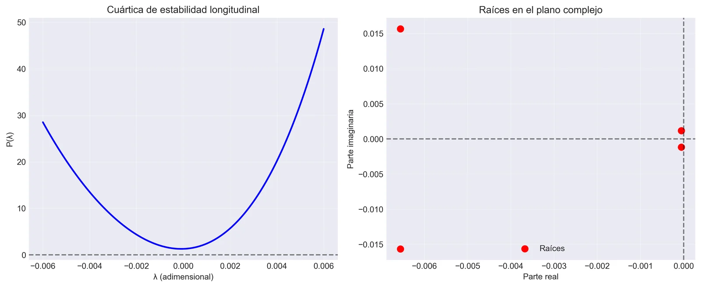
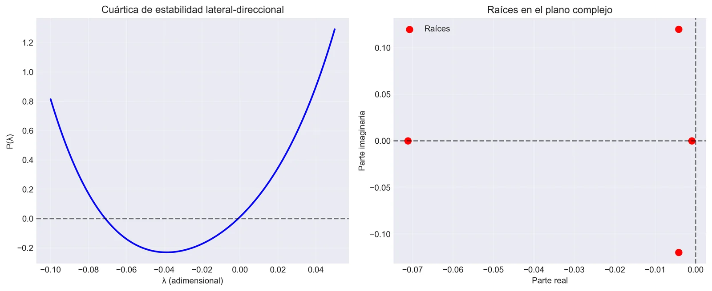
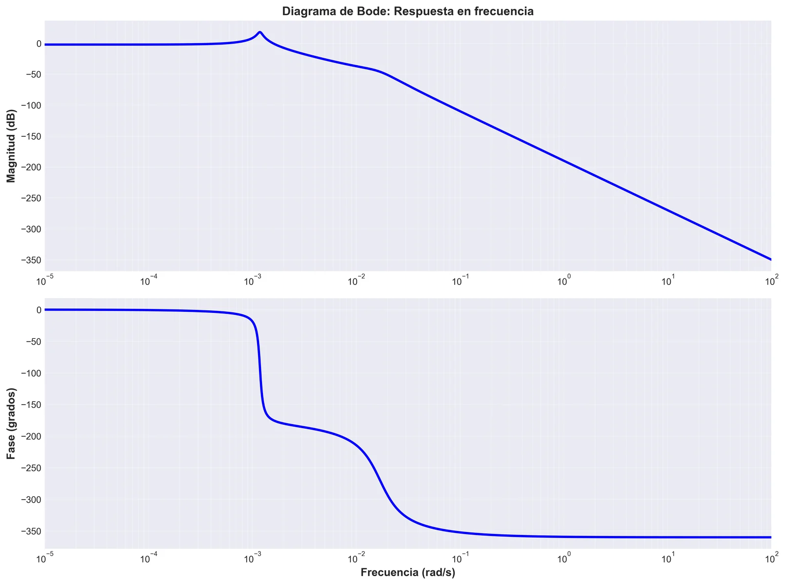
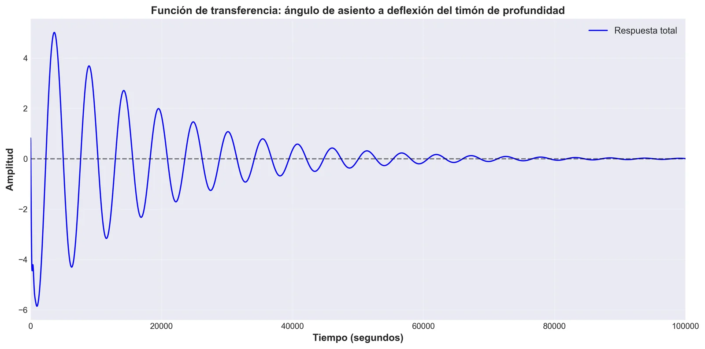

Longitudinal state vector
xlong = [u, α, q, θ]T
Forward-speed perturbation, angle-of-attack perturbation, pitch rate and pitch attitude.
A team study connecting linear aircraft equations of motion with longitudinal and lateral-directional dynamic modes, stability criteria and control-system response.
The objective of the study was to examine aircraft stability around a symmetric, steady-cruise reference condition. Rather than analysing the full nonlinear equations of motion directly, the team used a linearised representation based on small perturbations around the selected trim condition.
This approach makes it possible to separate the aircraft response into two commonly studied groups: longitudinal motion, associated mainly with forward speed, angle of attack and pitching motion; and lateral-directional motion, associated with sideslip, rolling and yawing motion.
I completed the work with Mario Barrio Alonso, Juan Ramírez Fernández and Begoña Santomé Ferragut. My contribution was fundamental to the team project. As the report does not allocate individual calculations by person, I do not attribute a narrower technical task to myself.
The starting point was the linear state-space form. It expresses the time evolution of the perturbation state vector as a function of the current state and the control input:
ẋ = F x + B u
Here, x is the state vector, u is the control-input vector, F is the system (or dynamics) matrix and B maps the control inputs into the state derivatives. The entries of these matrices are assembled from the aircraft's stability and control derivatives, together with the reference-flight and mass-property data supplied for the exercise.
xlong = [u, α, q, θ]T
Forward-speed perturbation, angle-of-attack perturbation, pitch rate and pitch attitude.
xlat = [v, p, r, φ]T
Lateral-velocity perturbation, roll rate, yaw rate and bank angle.
The Python workflow was organised to move from the supplied aircraft data to stability and response analyses. Keeping these stages connected is important: the characteristic roots, modal interpretation and control-response plots should all be generated from the same model version.
The eigenstructure of the linear models is useful because it turns a set of coupled differential equations into identifiable dynamic behaviours. The team considered the conventional longitudinal and lateral-directional modes listed below.
A relatively fast longitudinal oscillation dominated by changes in angle of attack and pitch rate. It is closely associated with the aircraft's immediate pitching response.
A slower longitudinal motion involving an exchange between kinetic and potential energy, typically reflected in coupled variations of speed and flight path.
An oscillatory lateral-directional motion in which yawing and rolling are coupled, commonly accompanied by sideslip.
A primarily non-oscillatory roll-rate response that decays or grows according to the corresponding real eigenvalue.
A slower lateral-directional tendency involving bank and heading. Depending on the eigenvalue, the motion may slowly converge or diverge.
The control-response analysis examines how an elevator input is transmitted to the pitch-related output through the longitudinal model.
These descriptions explain the physical meaning of the modes considered in the study. They are not, by themselves, a statement that the particular numerical model is stable or that its modal values have been verified.
The two root plots are retained as separate figures so that the longitudinal and lateral-directional results can be inspected independently. Their numerical interpretation remains provisional until the plotted roots are regenerated from the matrices used in the report.


The Bode and step-response figures illustrate two complementary ways of examining the reported elevator-to-pitch transfer function. The frequency-domain view describes gain and phase as a function of excitation frequency; the time-domain view shows the output following a unit-step input.


The HTML supplied for this case study identifies an important inconsistency: the longitudinal and lateral-directional matrices printed in the report do not reproduce the eigenvalues listed in its results tables. It also records that the printed lateral-directional matrix yields a Dutch-roll pair with a positive real part, whereas the report's conclusion states that the model is stable.
This difference matters because the sign of an eigenvalue's real part determines whether the corresponding linear mode decays or grows with time. A positive real part indicates a growing mode in the linear model; it cannot be dismissed while retaining the report's overall stability conclusion.
This project brought together several central tools in aircraft dynamics: linearisation, state-space modelling, characteristic equations, stability criteria, eigenvalue analysis and control-response evaluation. It also highlighted a practical engineering lesson: a plot or a stability statement is only as reliable as the model and input data from which it was generated.
The next step is to regenerate the complete analysis from one traceable set of source inputs. The matrices, roots, modal parameters and control-response plots should then be checked against one another before any definitive conclusion is published.
Next case study: Panel Methods →